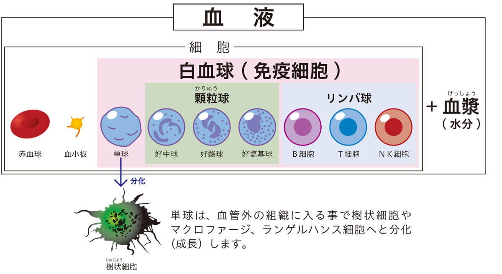

简体中文
简体中文


免疫細胞
血液
免疫細胞は我々の体を循環する血液中やリンパ液中に存在しています。
人間の体には５リットルから６リットルの血液があり、心臓から送り出される血液は２０秒から３０秒ほどで再び心臓へと戻ってきます。血液には体中へ酸素を運んだり、ウイルスや細菌、がんなどを攻撃したり、傷を治したり、体中の組織へホルモンや薬などの物質を運搬する役目を担っています。血液は細胞成分と血漿（けっしょう）成分からできており、ほとんどが血漿（水分）です。
血漿には塩類（電解質）や様々なたんぱく質（アルブミンなど）が溶けています。その中でも、主にアルブミンというたんぱく質は血液の液体成分が血管から組織に漏れ出るのを防いだり、ホルモンや薬などの物質に結合して運搬する働きをします。
赤血球
細胞成分の96％を占める赤血球は体中へ酸素を運ぶ役割をします。赤血球は成熟する最終段階で細胞内器官のほとんどを遺棄し細胞核を持たない細胞です。その為、赤血球の内部にはヘモグロビンという赤いタンパク質で満たされています。
血小板
細胞成分の1％が血小板です。
血小板は凝固作用に関わっており、血の塊（血栓）を作って血管に出来た傷を修復する役割を持っています。
白血球
細胞成分、残りの3％が白血球と呼ばれる赤血球や血小板以外の細胞群となります。
この白血球が免疫細胞と呼ばれる細胞になります。
白血球には単球、好中球、好酸球、好塩基球、Ｔ細胞、Ｂ細胞、ＮＫ細胞があります。好中球、好酸球、好塩基球の3つは顆粒（かりゅう）球と呼ばれ、白血球の60％を占めます。残りの30％がリンパ球と呼ばれるＴ細胞、Ｂ細胞、ＮＫ細胞の集まりで、10％が単球です。顆粒球は細菌やウイルスに対して直接攻撃を仕掛けます。顆粒球は自分の細胞内に細菌などを取り込んで、たんぱく質を破壊する酵素で細菌を破壊し消化します。
樹状細胞
単球が血管外の組織に入る事で成熟し、マクロファージや樹状（じゅじょう）細胞、ランゲルハンス細胞に分化します。マクロファージや樹状細胞、ランゲルハンス細胞には抗原提示機能があり、細菌や異物細胞などを食べる事で細胞表面に抗原を掲げ、Ｔ細胞へこの抗原を提示する役目を担います。
リンパ球
リンパ球は大きく3種類あります。抗体を作る細胞に変化するＢ細胞と、ウイルスの感染を防いだり、がん細胞を攻撃してくれるＴ細胞、ＮＫ細胞に分ける事が出来ます。これらのリンパ球は血液中以外にもリンパ節などに多くいる事からリンパ球と言われるようになりました。



{kind=link}